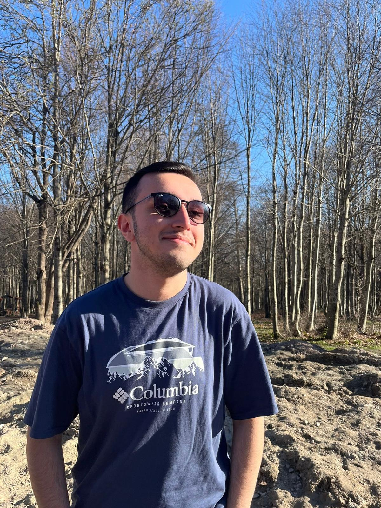
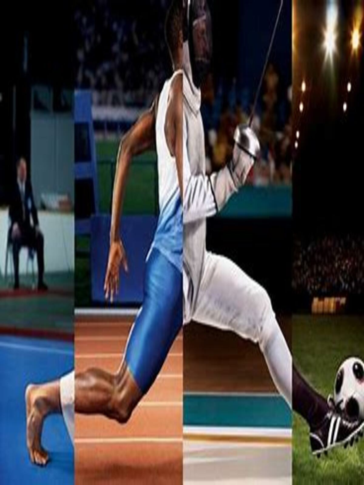
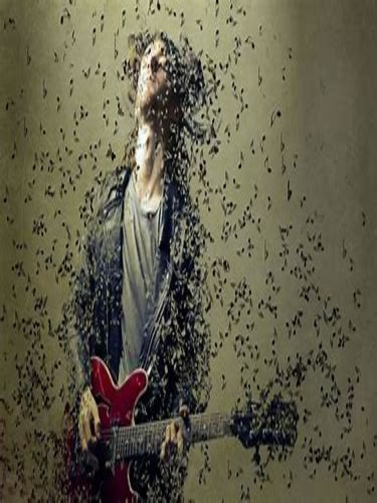

|

HAKKIMDAMerhaba ben Baran Yeşilyurt.Kocaeli İli Körfez İlçsinde 2005 yılında doğdum ve halen orada yaşamaktayım. İlkokulum Ahmet Taner Kışlalı İlkokulu.(İlkokul) Ortaokulum Çelik Sanayi Ortaokulu.(Ortaokul) Lise Oruç Reis Anadolu Lisesi.(Lise) Üniversite Sakarya Üniversitesini 2023 yılında kazandım.(üniversite) |

SPORYaşam kalitemi artıran ve kolektif bir ruh haline gelebilmeyi öğrenmek için en iyi yöntem olan yüzme sporunun hayatımdaki önemi, azımsanamayacak kadar fazladır.Hem eğlenceli hem de sağlıklı bir spor olan yüzme, tüm vücut kaslarımı çalıştırıyor.Yüzmek, stresimi atmama ve rahatlamama da yardımcı oluyor. |
|

MÜZİK15 yaşından beri gitar çalıyorum. Müziğin büyüleyici dünyasına bu enstrümanla adım attım ve o zamandan beri müzik benim için sadece bir tutku değil, aynı zamanda bir yaşam tarzı haline geldi. Gitar çalmak, duygularımı ifade etmenin en güzel yolunu bulmama yardımcı oldu ve beni sürekli olarak keşfetmeye ve gelişmeye teşvik etti. |
YAZILIMYazılıma ilgi duymam, teknolojinin arkasındaki sihirli dünyayı keşfetme isteğiyle başladı. Bilgisayarların nasıl çalıştığını anlamak ve kendi yaratıcılığımı kodlarla ifade etmek beni cezbetti. Her yeni dil ve proje, benim için bir bulmaca çözmek gibiydi. Yazılım, sadece bir araç değil, aynı zamanda dünyayı değiştirebilecek bir güç olarak görüyorum. |